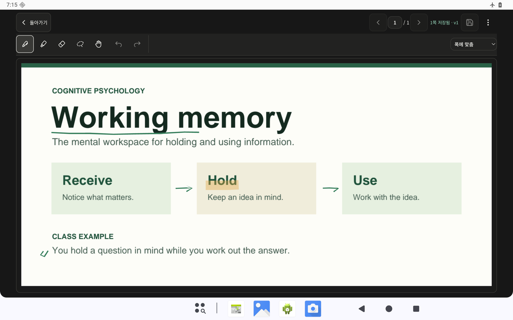

작업 기억
작업 기억은 정보를 잠시 머릿속에 두고 필요한 방식으로 다루는 과정입니다.
질문에 답할 때는 질문을 기억한 채 답을 생각합니다. 질문을 붙들고 답을 만드는 데 작업 기억이 쓰입니다.
작업 기억을 설명하는 대목
작업 기억에는 정보를 유지하고 조작하는 과정이 포함됩니다.
Mac에서는 대본에서 문장을 골라 해당 구간의 원음을 확인할 수 있어요.
강의 자료, 필기와 녹음을 한 과목에 모으는 Solasi.
작업 기억은 정보를 잠시 머릿속에 두고 필요한 방식으로 다루는 과정입니다.
질문에 답할 때는 질문을 기억한 채 답을 생각합니다. 질문을 붙들고 답을 만드는 데 작업 기억이 쓰입니다.
작업 기억에는 정보를 유지하고 조작하는 과정이 포함됩니다.
Mac에서는 대본에서 문장을 골라 해당 구간의 원음을 확인할 수 있어요.


Android 9 이상, ARM64 v3 개발 프리뷰
Apple Silicon, macOS 27 이상 개발 프리뷰